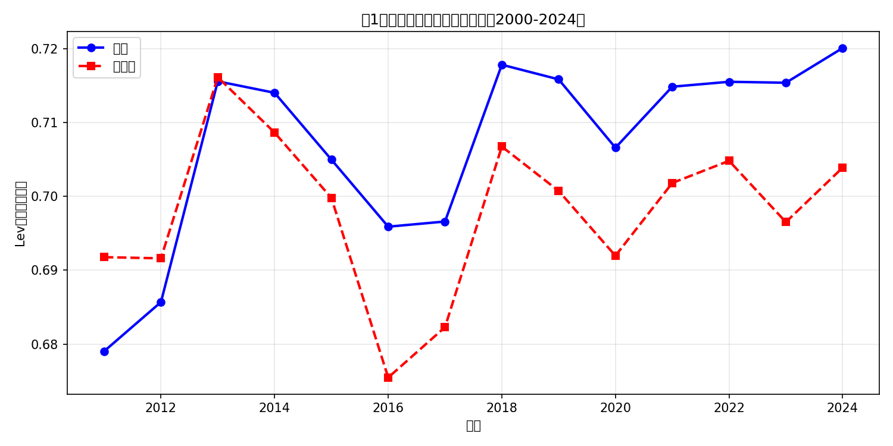
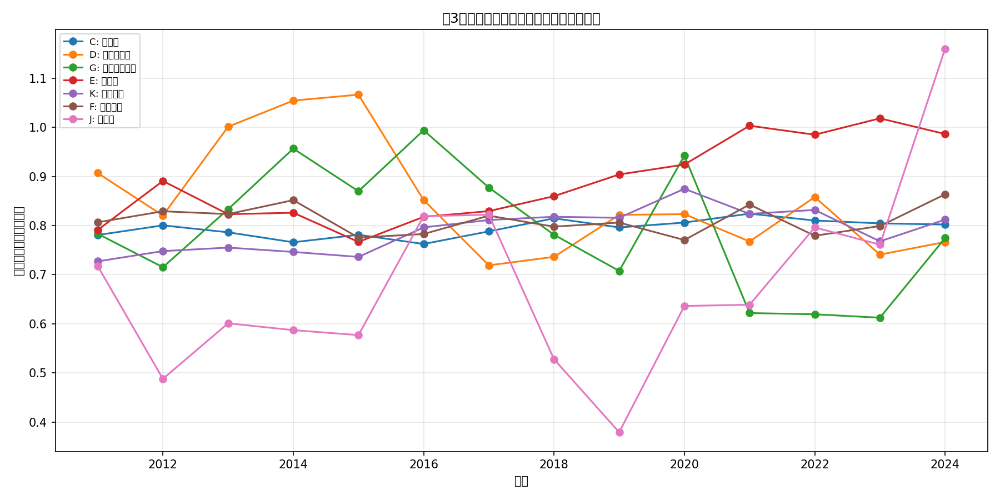
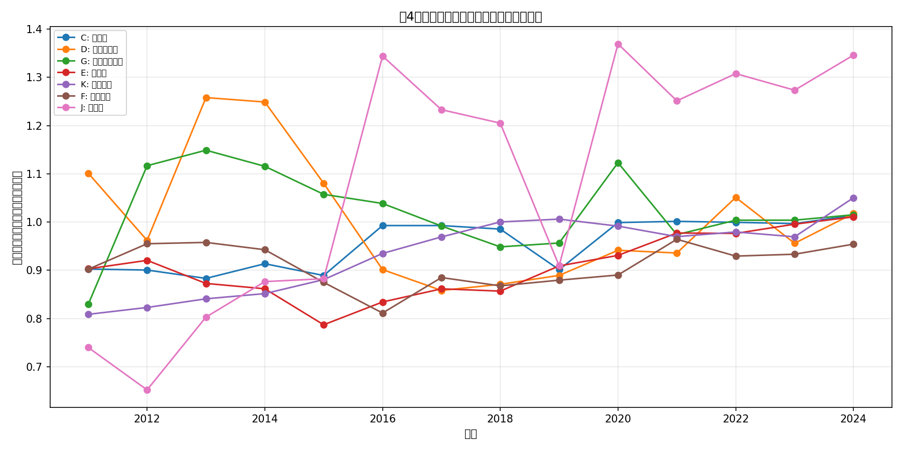

数据来源：CSMAR（国泰安）上市公司财务数据
样本规模：4,060,510 行
公司数量：5,833 家
| 数据类别 | 实际年份范围 | 说明 |
|---|---|---|
| 治理变量（Top1, HHI5, 市值等） | 2000-2023 年 | 「常用变量查询（年度）.xlsx」覆盖 |
| 财务变量（Lev, ROA, Cash等） | 2011-2024 年 | 「跨表查询_沪深京股票(年频).xlsx」覆盖 |
重要说明：受 CSMAR 数据源本身限制，财务报表数据（资产负债、利润表等）最早只到 2011 年。作业要求"2000年至今"为理想目标，实际分析中 2000-2010 年财务指标为缺失状态，已在各图表中单独过滤有效值。
部分年份（2012-2015）存在企业资不抵债（总资产≤0）导致负债率极高（inf），已在分析时过滤合理范围（0≤Lev≤1.5）。
| 变量 | 名称 | 计算公式 |
|---|---|---|
| Lev | 总负债率 | 总负债 / 总资产 |
| SL | 流动负债率 | 流动负债 / 总资产 |
| LL | 长期负债率 | 非流动负债 / 总资产 |
| SDR | 短债比率 | 流动负债 / 总负债 |
| Cash | 现金比率 | 货币资金 / 总资产 |
| ROA | 总资产收益率 | 净利润 / 总资产 |
| ROE | 净资产收益率 | 净利润 / 所有者权益 |
| LLoan | 长期银行借款率 | 长期借款 / 总资产 |
| Top1 | 第一大股东持股比例 | 直接取自 CSMAR |
| HHI5 | 前五大股东持股集中度 | Σ(前5位股东持股比例平方) |
| Size | 公司规模 | ln(总资产) |
| Age | 上市年限 | 会计年度 - 上市年份 + 1 |
分析：均值长期高于中位数，说明 A 股上市公司负债率分布右偏，存在高杠杆企业拉高均值的情况。2020 年后宏观杠杆率整体有所上升。

分析：盈利能力（ROA）和现金持有（Cash）在多数年份呈同向变化，企业盈利好时现金更充裕。2023 年 ROA 均值约为 3.5%，反映 A 股整体盈利能力。

分析：房地产（K）和建筑业（E）的负债率明显高于其他行业，均值超过 0.7，反映行业高杠杆经营特性。金融业（J）口径特殊，负债率最高但资产端结构不同。制造业（C）杠杆率适中且稳定。

分析：加权平均下房地产和金融业的负债率更高，说明大公司杠杆率更高。算术平均与加权平均的差异反映行业内大公司与小公司杠杆结构的分化。

分析：2005 年股权分置改革前后，Top1 分布发生明显变化——改革前中位数更高、极端值更多；2007 年后分布逐渐分散化。2023 年与早期年份相比，第一大股东持股比例整体下降，股权制衡程度有所改善。

报告生成时间：2026-05-19